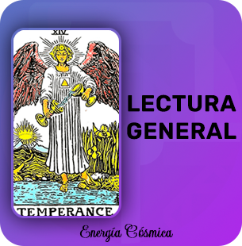
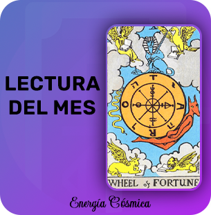
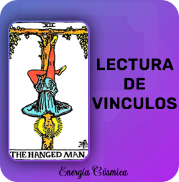
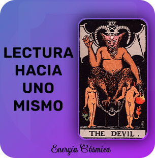
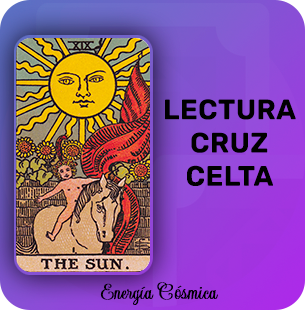
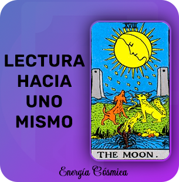

Lecturas de Tarot
🌘Lectura General & Lectura del Mes🌒
LECTURA GENERAL
Esta lectura nos muestra la energía actual de cada aspecto cotidiano de nuestras vidas ya sea amor, trabajo, amistad, familia, dinero, entre otras.
En este caso veremos también nuestra energía en cuanto a personalidad y mente, podemos ver el desarrollo personal y espiritual del consultante, y a lo último se da un consejo para cada aspecto y para uno mismo con sus cosas.
Primer Fila tu personalidad o estado mental.
Segunda Fila tu superación personal o desarrollo espiritual.
Tercera Fila familia y hogar.
Cuarta fila vida amorosa o vida social.
Quinta fila Dinero o economía.
Sexta fila Trabajo..
Además podés realizar 1 pregunta y cerramos la lectura con una carta consejo del oráculo..
Tiene un valor de 700ARS/19USD
Comprar
LECTURA KÁRMICA
Esta lectura está compuesta por 8 cartas las cuales muestran no solo el karma que el consultante debe de vivir, si no también en que ocaciones, situaciones y en qué otras cosas aparece, lo que debe aprender para romper o cortar con ese karma para no repetirlo en la siguiente vida, etc.
En estas ocho cartas veremos:
Primer carta Veremos el estado energético del consultante..
Segunda carta Nos mostrará el karma que el consultante debe cumplir..
Tercer, Cuarta y Quinta Carta Como se manifiesta el karma en la vida..
Sexta Carta Qué cosas debe vivir..
Septima Carta Que debe aprender..
Octava Carta Consejo de la esencia divina..
Además podés realizar 1 pregunta y cerramos la lectura con una carta consejo del oráculo..
Tiene un valor de 750ARS/20USD
Comprar
🌘Lectura de Viculos & Hacia uno Mismo🌒
LECTURA DE VINCULOS
-Aquí vemos en profundidad una relación.
(no es una lectura exclusiva de parejas o relaciones sexo/afectivas, también podés a hacer esta lectura en base a una relación familiar o de amistad.).
¿Qué aspectos vemos?
Cómo se encuentra cada unx en este momento
Que sienten el unx por el otrx,
La energía que ponen en el vinculo,
Lo que piensan respecto del vinculo,
Un consejo para la relación + un consejo para vos.
Además podés realizar 1 pregunta y cerramos la lectura con una carta consejo del oráculo..
Tiene un valor de 750ARS/20USD
Comprar
.
LECTURA HACIA UNO MISMO
Esta lectura nos ayuda en cuanto a nuestro desarrollo personal y espiritual, también nos guía a la hora de trabajar algo en nosotros.
Esta lectura tiene como fin mostrarnos nuestra energía actual, como debemos avanzar, que cosas debemos soltar o superar, etc.
La lectura hacia uno mismo contiene 5 cartas las cuales van a guiarnos en nuestro camino.
Primer carta nos muestra el momento actual.
Segunda carta lo que se debe potenciar.
Tercera carta lo que el consultante debe dejar atrás o soltar.
Cuarta carta nos muestra el camino a seguir.
Quinta carta a donde debe llegar el consultante.
Además podés realizar 1 pregunta y cerramos la lectura con una carta consejo del oráculo..
Tiene un valor de 700ARS/19USD
Comprar
🌘Lectura de Cruz Celta & Preguntas Libres🌒

CRUZ CELTA
Es una de las tiradas más antiguas y más completas que existen en el Tarot.
Cada posición está conectada con las demás, representando una situación dada vista desde el momento presente. Está compuesta por 10 cartas que muestran el desarrollo de una situación en forma dinámica,es una lectura que brinda mucha informacíon.
Primer Carta: Situación. La carta que describe la temática principal. Lo que e3tá pasando.
Segunda Carta: El desafío u obstáculo. Lo que se cruza. La carta que aparece 3quí también puede verse como lo que se necesitapara atravesar el obstáculo.
tercera carta: Lo que sostiene a la situación.
Cuarta Carta: De dónde venimos. La lección que ya hemos aprendido del pasado y3que estamos integrando en el presente.
quinta carta: Objetivo. Lo que queremos lograr. Lo que estamos pensando.
Sexta Carta: Hacia dónde vamos. El futuro inmediato. Lo que está en proce3o de manifestación.
Sectima Carta: Uno mismo. Cómo somos afectados por el asunto.
Octava Carta: Lo que nos rodea. También puede significar cómo nos perciben lo3 demás o el efecto que la situación (posición1) tiene sobre nuestro medio ambiente.
Novena Carta: Expectativas. Lo que tememos y lo que esperamos.
Decima Carta: En qué concluye la situación. Las consecuencias. Lo que se aprende.
Tiene un valor de 900ARS/23USD
Comprar
Preguntas Libres
Son preguntas puntuales y las que quieras, las respuestas son con desarrollo y para finalizar sacamos un consejo del oráculo.
Puedes elegir Una sola Pregunta o un combo de 3 o 5 Preguntas. (Por Pago)
*Es importante saber que no se responden preguntas vinculadas a embarazos o estados de salud.*
Ingresa en Comprar para ver los precios de cada pregunta
Comprar